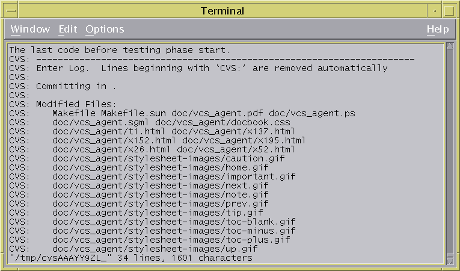

首先login用
1.$ cvs login |
然後進到一個source 的最上層，例如$HOME/myproj裡面，然後用
2.$ cvs import myproj dev_team r_0_0_1 |
這樣原本的$HOME/myproj就沒有用了，必須新從櫃子裡面拿出一個module， 在$HOME下面用
3.$ cvs checkout myproj |
從此你要改myproj的程式，通通都在這個目錄下，然後如果你開始更動檔案， 改完了檔案，要用
4.$ cvs commit file.c |
當別人有commit行為時，你要進到這個module目錄上用
5.$ cvs update |
其中commit完會叫你輸入一些紀錄訊息，型式是隨意的沒有特定格式。 會去叫vi起來，如下圖
Figure 3-1. CVS log

CVS: xxxx..... CVS: xxxx..... CVS: xxxxx..... |
cvs login :簽入CVS cvs import :放個module進CVS管理 cvs chekcout :拿出一個module cvs add :增加個檔案 cvs remove :移除檔案 cvs commit :送交改變，每次都要輸入這次的送交資訊，叫log message。 cvs update :別人有新的送交行為時，更新自己的版本，同步櫃子的版本。 cvs status :看目前repository裡面有那些檔，檔案版本等等資訊 -l只看local cvs diff :看兩個版本的差異 cvs log :看一下log歷史紀錄 cvs logout :簽離CVS |
cvs co -P module_name cvs update -P |
另外如果要處理binary檔，例如jpg Micorsoft DOC檔，commit時要加-kb選項，update時加-A這個選項。 請看參考篇的說明。
cvs tag : 為目前檔案建立一個名稱 發行存取等等 都可以用tag來辨認
: 通常是站在top of source給全部的檔
: cvs tag xxxx .
cvs export -r tag-name module
: 建立一個沒有admin files的版本 也就是沒有CVS這些目錄在source下
cvs release : release (cvs checkout 不能再用了)
cvs rdiff : 建立目前版本與指定版本的source patch file
|
-d : 後面跟著repository所在可以動態改變一下repository -m : 是說check in的log message. -l : 是說只有目前所在目錄下檔案(local)不會把子目錄的檔案考慮進來 -r : 是存取某個tag的版本(reversion) -D : 存取某個特定日期版本 |